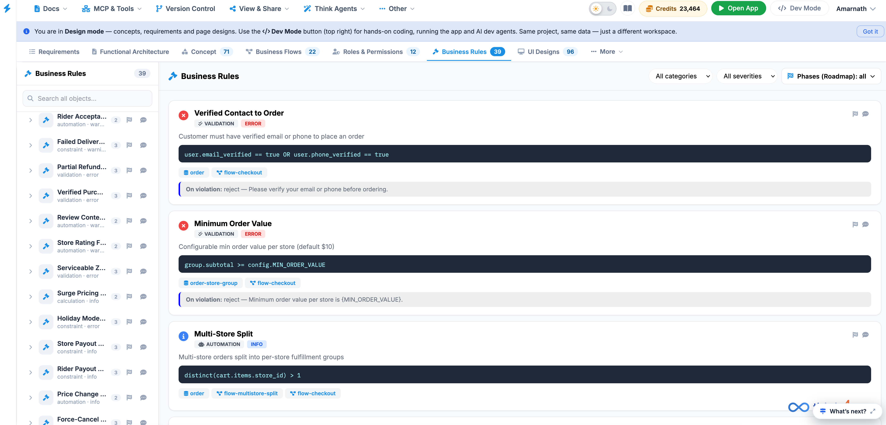
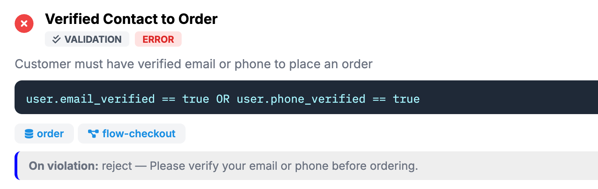

Business Rules
The Business Rules section allows authorized users to define and manage the rules that control how the application behaves under specific conditions.
Business rules represent the “if/then” logic of the application. They define what should happen when a particular condition is met, without requiring users to understand or modify the underlying application code.

For example:
If a user has a Free tier account, then the user can upload only 1 document per month.
By centralizing these rules, the platform can consistently apply business policies across different features, users, and workflows.
Purpose of Business Rules
Business Rules help organizations translate business policies and requirements into configurable application behavior.
They can be used to define rules related to:
- User eligibility
- Account or subscription limits
- Data validation
- Transaction restrictions
- Approval requirements
- Workflow conditions
- Access or feature availability
- Operational limits and thresholds
Centralizing these rules makes it easier to maintain business logic and reduces the need to hard-code individual business requirements into application features.
How Business Rules Work
A business rule generally consists of two parts:
The Condition determines when the rule should be applied, while the Action defines what the system should do when the condition is satisfied.
Example

The system evaluates the condition and applies the corresponding action automatically.
Business Rules Configuration
The Business Rules Configuration interface is used to define and manage the rules used by the application.
When configuring a rule, users can specify the conditions and expected behavior that should be applied when those conditions are met.
Depending on the rule, the configuration may include:
- Rule Name – Identifies the business rule.
- Condition – Defines when the rule should be triggered.
- Action – Defines what the system should do when the condition is met.
- Value or Threshold – Specifies a limit, amount, status, or other value used by the rule.
- Status – Indicates whether the rule is currently active or inactive.
Why Use Business Rules?
Using configurable business rules provides several benefits:
- Consistency – Business policies are applied consistently throughout the application.
- Flexibility – Rules can be adjusted as business requirements change.
- Centralized Management – Business logic can be managed from a single location.
- Reduced Development Effort – Common business logic does not need to be repeatedly hard-coded.
- Better Governance – Rules provide a structured way to define and maintain operational policies.
- Scalability – New rules can be introduced as the application and business processes evolve.
Best Practice: When creating or reviewing business rules:
- Use clear and descriptive rule names.
- Define conditions precisely to avoid unexpected behavior.
- Specify the expected action or outcome clearly.
- Avoid creating overlapping or conflicting rules.
- Review thresholds and limits regularly as business requirements change.
- Deactivate obsolete rules rather than leaving outdated logic active.
- Test rules against both valid and invalid scenarios before deploying them.